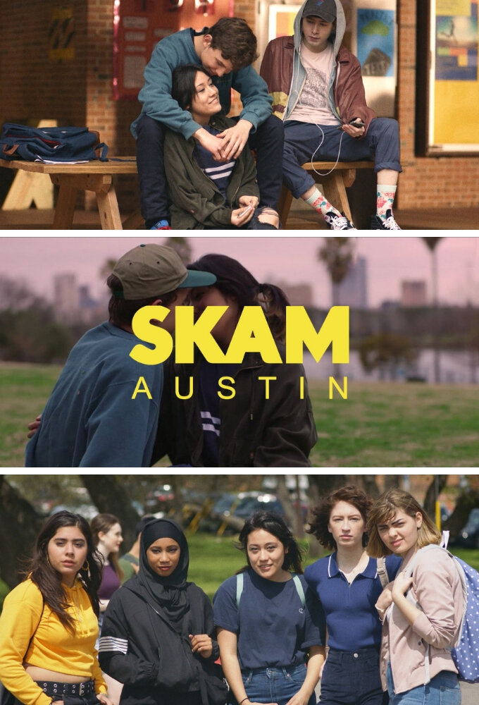

Skam Austin – це американська версія серіалу, яка транслювалася на Facebook Watch. Створена для сучасної американської аудиторії, серія розкриває життя підлітків Техасу: школу, стосунки, проблеми прийняття себе та соціальні мережі.
© 2025 SKAM Fan Site